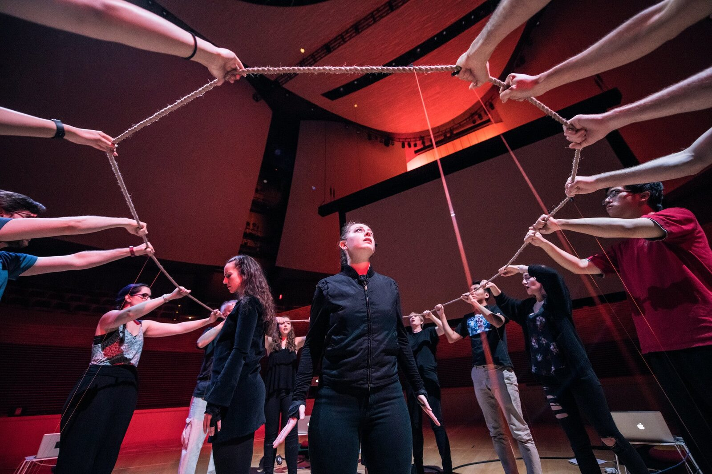

The Furies: A Laptopera - \"Glorious Guilt\"
PROJECT DESCRIPTION
“Glorious Guilt” is an excerpt of The Furies: A Laptopera, originally premiered by the Stanford Laptop Orchestra (SLOrk). In this scene, a collective controller, The Rope, acts as a barrier between the Furies and their victims (Electra and Orestia) as well as an instrument guiding harmony and rhythm accompanying the voices of the Fury chorus. The Furies surround the rope, collectively raising and lowering the rope with wave-like gestures to perform their ritual, “Glorious Guilt.”
The rope is attached to six GameTrak Tether controllers spaced evenly around the rope. Each tether is attached to a laptop and gathers six axes of spatial information. This information determines the playback of various samples or sound synthesis depending on the instrument design. The sound is spatialized across hemispherical speakers so that each player has a localized instrument.
The length and rate of change of the tethers control the playing of specific harmonic samples. Percussive samples are networked to a constant pulse controlled by a server computer and automated variations are introduced throughout the piece. Players control volume and, through volume, collective panning in real-time. As the rope gets pulled in different directions, the sound swells around the space. Through practice, the ensemble perfects a kind of Ouija board-like playing where the rope communally moves around the outskirts of the space, panning the beat as it travels.
The basic song form of “Glorious Guilt” creates something familiar and, with the repetition, supports the ritualistic drama while allowing time for the audience to become acquainted with the instruments. This piece aptly introduces the laptopera, showcasing its potential to use physical, group-based, embodied interfaces to support dramatic elements and character relationships.
PROGRAM NOTES
Originally premiered by the Stanford Laptop Orchestra (SLOrk), “Glorious Guilt” is an excerpt of The Furies: A Laptopera, an opera for laptop orchestra and live vocalists. This opera is a retelling of the Greek tragedy Electra and explores central questions regarding cycles of violence and the meaning of justice and redemption. In this moment, the Furies, given the task of enforcing moral law, surround Electra and Orestia as they grapple with the violence they have perpetrated in killing their mother and simultaneously avenging their father. Using the laptop orchestra as the medium for this artistic creation, this piece weaves together choral vocals with a collective controller, The Rope. The rope instrument uses GameTrak tether controllers to send information regarding the rope’s location and rate of movement to control the sonic character, panning, and volume of the soundscape. Harmonic elements are coordinated through choreographed movement. Rhythmic elements, aligned through a shared server, use this same choreography to spatialize the rhythmic texture through real-time panning. The artistic medium of the laptop orchestra serves to recast traditional instrumental roles to support a new kind of operatic medium.
PERFORMANCE REQUIREMENTS
Equipment: Performers will provide the equipment including 3 laptops, 3 sets of hemispherical speakers, 1 subwoofer, 3 GameTrak tether controllers, one large rope (25’ long and 1.5’’ thickness), server laptop, and ethernet cables to connect all laptops to the server. We will require at least two electrical outlets and two power strips with at least six outlets each.
Space: We will need a stage with minimum dimensions of 14 feet wide by 14 feet deep. This work is well suited for a concert hall and could also fit in a gallery or club with reasonable acoustics (live vocals are not amplified).
Players: 3 or more players. We will provide three to four players/vocalists.
Feasibility: “Glorious Guilt” has been performed multiple times with varying numbers of performers, including the following performances:
SLOrktastic Chamber Music, CCRMA Stage, Stanford University, May 2nd, 2019 at 7:30 pm
2019: A SLOrk Odyssey, Bing Concert Hall, Stanford University, June 8th, 2019 at 7:30 pm
Digital Civil Society Conference Opening Performance, Art Ventures Gallery, Menlo Park, CA, October 30th, 2019 at 6:00 pm
The Furies: A Laptopera, Act I Premiere, CCRMA Stage, Stanford University, December 7-8, 2019
Requirement, minimum stage dimension of 14 feet wide by 14 feet deep.
Requirement, two outlets and two power strips with at least six outlets each
MEDIA
The Furies: A Laptopera (Act III, 2019)
Performed by Stanford Laptop Orchestra
Bing Concert Hall @ Stanford University, June 2019
Music & Libretto: Anne Hege
Instrument Design: Anne Hege, Camille Noufi, Elena Georgieva;
Soloists - Electra: Shauna Fallihee; Orestia: Alice Del Simone; Apollo: Sidney Chen;
Stanford Laptop Orchestra directed by Ge Wang
Produced by: Anne Hege and Ge Wang


Rehearsal of The Furies: A Laptopera, Act III: Scene 1 “Glorious Guilt”